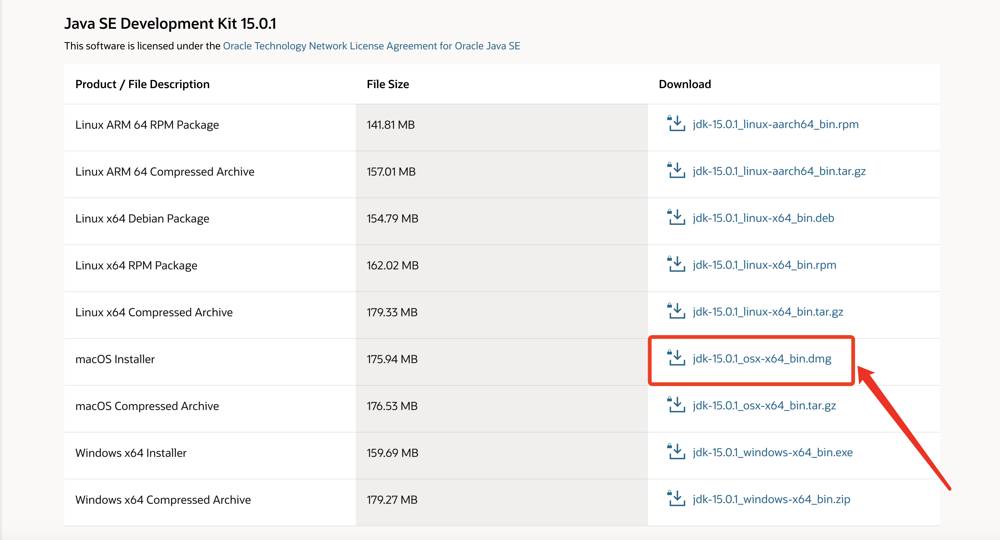
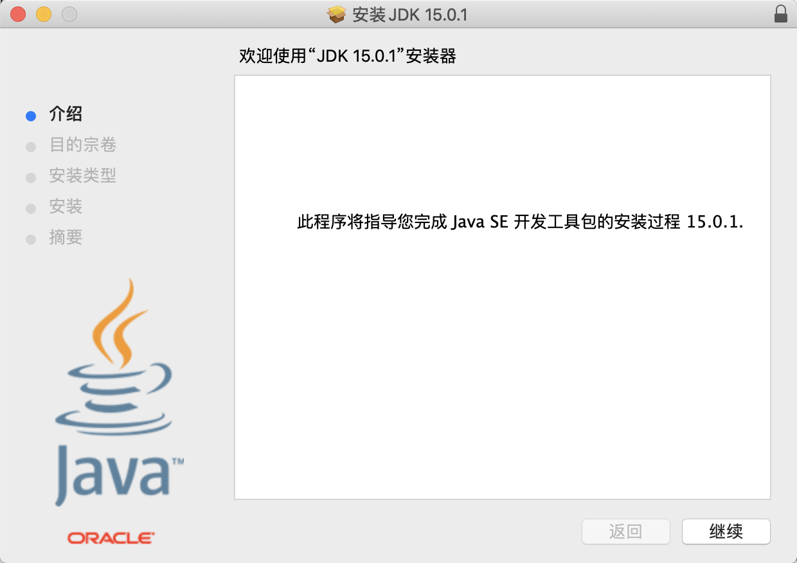
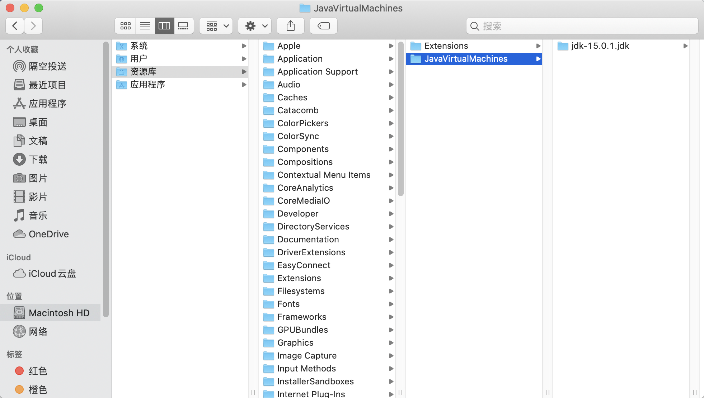
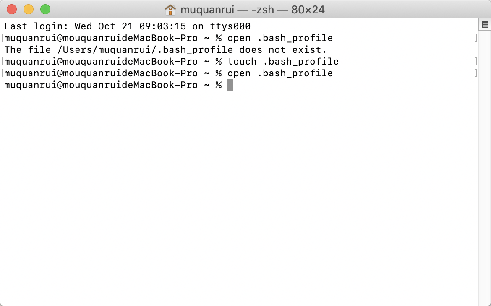
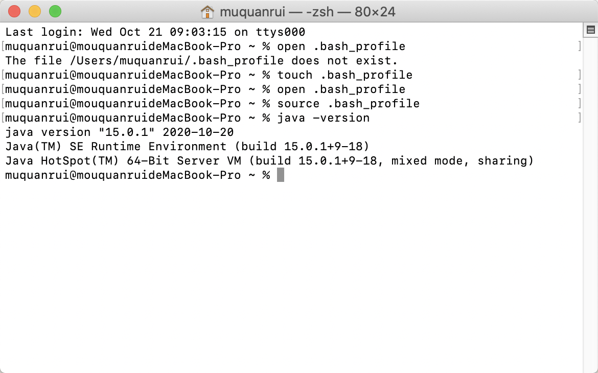
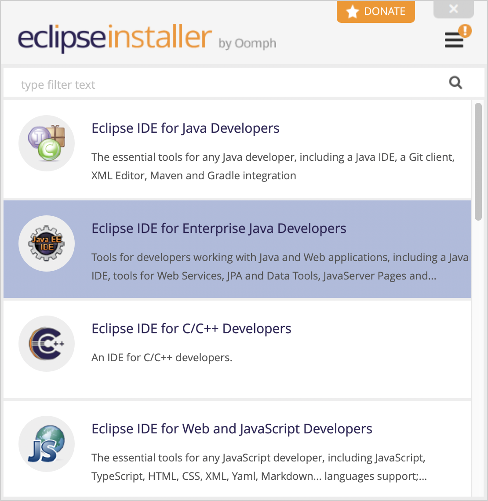
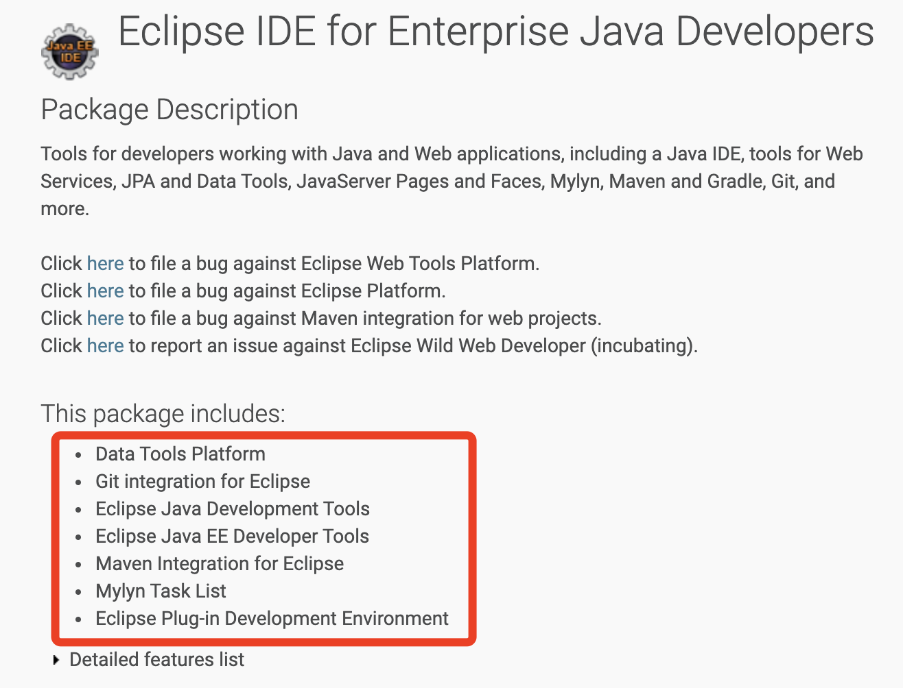
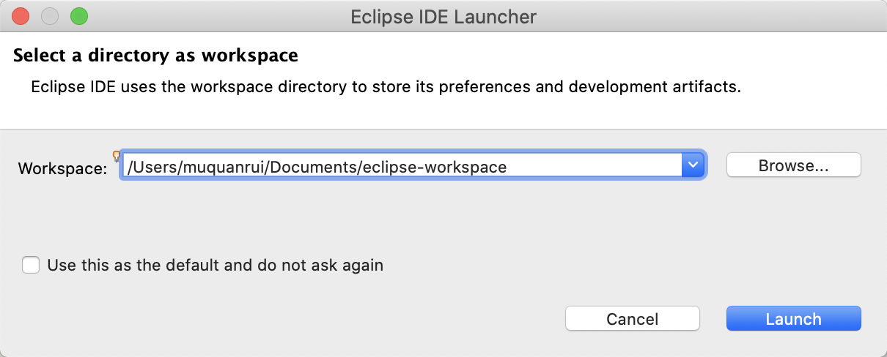
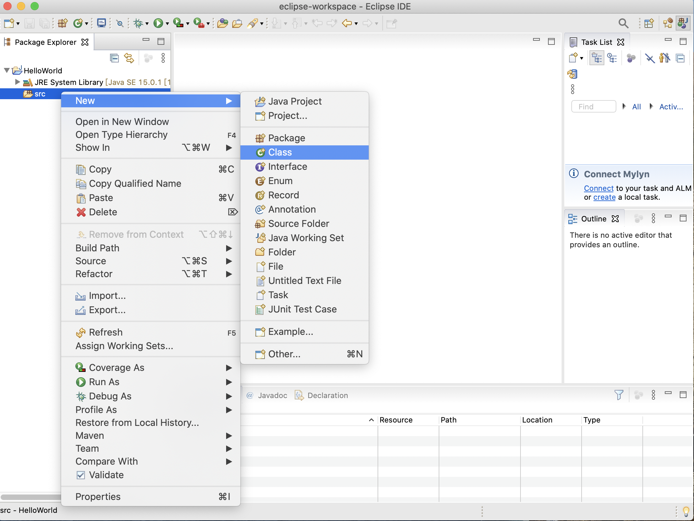
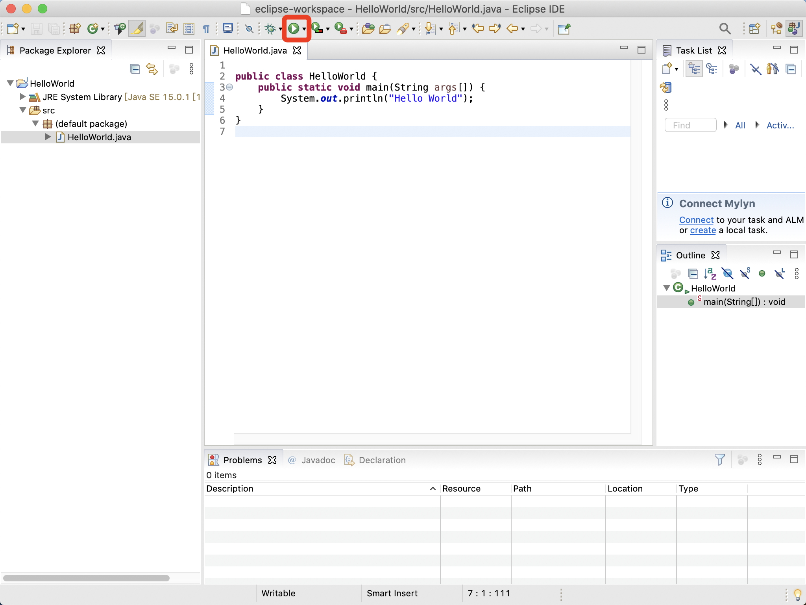

下载JDK
- 打开Oracle的官网，选择下载Java。

- 选择下载JDK。（如果不想下载最新版本，可以往下滑动找之前的版本下载）

- 选择下载macOS版本的JDK安装包。

安装JDK
就像安装其他软件一样，打开安装包，按照操作提示一步一步往下走。

由于在安装的时候目的卷宗是直接跳过的，即安装路径是默认的，因此我们无法为JDK选择它的安装位置，事实上它安装好之后的路径如下图所示。

配置环境变量
在Windows下面配置环境变量只用右键我的电脑找到相应选项添加变量就OK，但是macOS上面有一些不同，需要手动打开环境变量的配置文件进行修改。
如果之前配置过环境变量，直接在终端使用open .bash_profile打开配置文件，但是如果提示没找到该文件，则需要自己创建配置文件。
使用命令touch .bash_profile创建一个.bash_profile隐藏配置文件，然后再使用open .bash_profile打开它。

此时会打开这个文件，但是里面什么内容都没有，在里面添加如下内容：
1 | JAVA_HOME=/Library/Java/JavaVirtualMachines/jdk-15.0.1.jdk/Contents/Home |
注意这里JAVA_HOME的路径，就是刚刚JDK安装目录下的Home文件夹的路径，如果下载的JDK版本不同，相应的JDK目录名字也会不同，注意修改。
添加好内容后，保存并关闭配置文件。然后在终端使用命令source .bash_profile使配置文件生效。
检测环境变量配置是否成功
在终端输入java -version来查看JDK的版本号，如果成功输出当前版本号，则说明配置成功。

安装Eclipse
有许多的Java IDE可以在macOS上面使用，因为我一直使用Eclipse比较多，所以这次还是选择安装使用Eclipse。
- 进入Eclipse官网，选择下载。
- 选择下载Tool Platforms。

- 由于已经识别系统为macOS，因此直接点击下载就可以下载Eclipse的macOS版安装包。

- 打开下载好的dmg文件，打开Eclipse Installer。

- 这里有对应不同的开发语言和场景的不同的Eclipse安装包，对于Java开发者，选择前两项中的一项就行，第二个Java EE版本的Eclipse，它拥有更多的开发工具，是更为完整的Java IDE。

两者的比较如下图所示：


- 根据引导，完成Eclipse的安装。路径这里保持默认选项就行，安装过程中会让同意协议，全选然后接受就行，安装完成后不用打开，直接退出安装程序。

- 在刚刚的默认安装路径下找到Eclipse，然后把它移动到应用程序（Applications）文件夹下，就可以在启动台找到它了。

- 打开Eclipse，设置workspace目录的位置，这是以后新建项目的默认保存位置，可以勾选上以后不再询问。

- 新建一个Java项目做一个简单的测试。






至此，macOS下Java开发环境搭建完成。
最后更新： 2020年10月21日 10:07
原始链接： http://vor.ink/2020/10/21/macOS%E4%B8%8BJava%E5%BC%80%E5%8F%91%E7%8E%AF%E5%A2%83%E6%90%AD%E5%BB%BA/